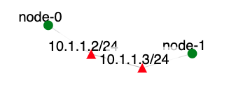

In this exercise, we are going to use the PAWS simulator developed by S.
Wei and Dr. J. Mirkovic [1]
using the DETER testbed. PAWS is a discrete time packet-level simulator
which simulates a realistic Internet model and the background traffic
load, enabling investigation of possible congestion effects and
sufferings of legitimate traffic during a worm attack. PAWS supports
various user-customizable parameters that enable testing of different
worm characteristics, host and network diversity models.
Before you do this experiment, you should read carefully the reference
papers [2],
[3],[8],
[9].
In this exercise, you will replicate an experiment which was carried out
by the authors in [3]
to evaluate how their proposed host-based dynamic quarantine system can
help to contain Internet worm propagation. Table 1 lists the original
experiment settings in
[3]
and the configuration and customization of PAWS used in
[2] to match the settings in [3].
Original Simulation
PAWS simulation
IPV4 address space with 2^32 addresses
Default Internet Model includes entire IPV4 address space
Vulnerable population = 75,000
Vulnerable population = 75,000
Average scan rate = 4,000/second
Average scan rate = 4,000/second
10 hosts are infected initially
In function determin_vulnerable_host(), randomly mark 10 vulnerable
hosts as infected
Simulation time unit = 0.05 sec
Simulation time unit = 0.05 sec
Dynamic quarantine, with quarantine rate = 0.2/sec and quarantine
time = 10secs
In function update_infectee_status(), if an infectee is currently
active, mark it as quarantined with a prability of 0.2
per second. In function update_infectee_status(), if an infectee has
been quarantined for 10 seconds, mark it as active.
In function worm_infectee_scan(), if an infectee is currently
quarantined, skip its scanning activity for the current
simulation interval
Assignment Instructions
Setup
If you don't have an account, follow the instructions here.
Create an instance of this exercise by following the instructions here, using worm as Lab name. Your topology will look like below:
.
After setting up the lab, access your nodes.
The /tmp/node-0/paws on node-0 folder contains the following files:
ASLinks.dat - a file which contains all the inter-AS links with
corresponding bandwidth values assigned
BGPAtom2AS.dat - a file which maps BGP atoms to the owner
ASes.
IPRangeTable.dat - a file which contains all the IP ranges
with their owner BGP atoms and ASes.
Similarly the folder /tmp/node-1/paws on node-1 contains the same files.
Tasks
Generating and Logging Attacks
Attacks can be generated and logged using the following steps (remember to use sudo in front of each command):
Log onto node-0
In the /tmp/node-0/paws directory run make.
Log onto node-1
In the /tmp/node-1/paws directory run make. Then run:
Make sure to replace yourusername with your actual username on DeterLab.
Then run gunzip paws_RT.dat.gz.
In paws folder, run paws_server > log on node-0 and paws_client > log on node-1. Code may run slowly toward the end and it may take about 2h to finish.
Do the analysis on the data contained in each log file.
Modify client.c in the paws directory to include the quarantine effect and change
the log filenames on each machine. Then, recompile and repeat the
experiment. Analyze the new log files.
Analyzing the log files
You need to replicate the Slammer Worm experiment (note that this
choice can be made in client.c in the paws directory by choosing either
the #define SLAMMER_WORM or WITTY_WORM line and recompiling using make)
and plot two curves similar to Figure 1 in
Tools for Worm Experimentation on the DETER Testbed.
The first plot should show how the number of infected hosts varies with
time for an original system and a quarantined system. The second plot
should show how the number of infected hosts and the number of
quarantined hosts vary with time. In your submitted report, you should
first describe briefly how Slammer worm spreads in the Internet and
summarize how the proposed host-based dynamic quarantine system works.
Then, include your plots and discuss the impacts of varying some of the
configuration parameters e.g. the quarantine rate.
What can go wrong
Segmentation fault. The segmentation fault may be
caused by an incomplete paws_RT.dat file. A complete version of that
file should be
about 645 Mbytes long.
Always rerun make in the paws directory if any .c or .h
file is modified.
Submission Instructions
Please submit your report and
your modified programs (only .c files are required).
The
report should describe how Slammer worm spreads and how the proposed
host-based dynamic quarantine system works. It should also include your
plots (see section Analyzing the log files for more details)
and your discussions on the impacts of varying some of the
configured parameters e.g. the quarantine rate.
The .c files should
not be included in the report but submitted as separate files.